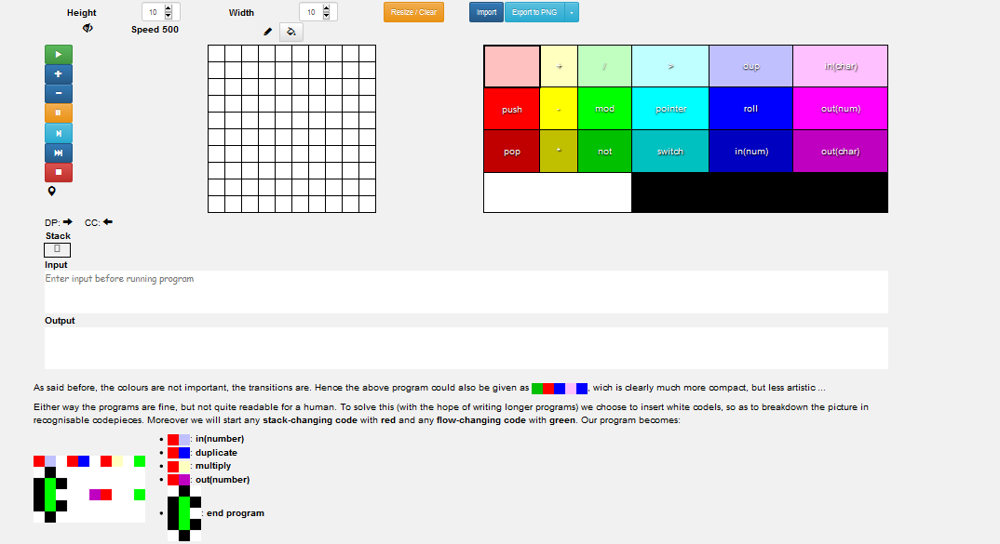
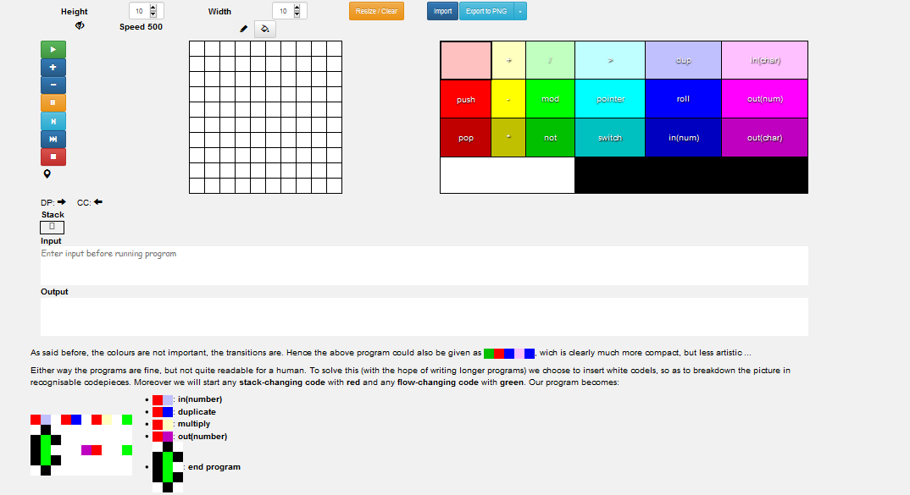

Introduction
EsoX (Esoteric Language User Experience), is a project that is meant to imagine various user experiences regarding multiple ways of
interaction with an esoteric programming language, plus activities of (e.g., learning, programming, translating into a general purpose
language, research,...) and related tools like interpreters, compilers, development environments, notable applications, and others.
The developed application will also recommend other (esoteric) programming languages according to user preferences, language categories
(paradigm, usability, computational class, other features), pragmatic usages, etc.
The requirements for the first part of the project presentation are as fallows:
- Minimum 3 ideas/concepts regarding the project design (including the sketches, wireframes, storyboards and, optionally, prototypes), plus the intermediary stages of the project development. Also, the team should provide the documentation – as Scholarly HTML – regarding interaction design patterns used in the wireframes/prototypes.
- Minimum 3 real examples concerning the QOC method. These examples could also give the motivation for choosing a certain idea/concept.
- The 4 mandatory HTML5 persona documents, for various personas interacting to the system.
- The project identity and the most significant details regarding the branding process.
Given the short but wide description there is a lot of room to maneuver so first thing we should narrow down the requirmeents to something that can
be managed.

To summarize the content of the image: Esox mission is to offer new ways of interaction in order to learn programming or to program. This will be done
by creating new tools or enhancing existing ones and by exploring diffrent "cultures" of giving introduction to machines.
Branding
In this section will take a look at logo, color scheme, text font-family and font-size (with scaling).
Idea 1

Esoteric languages, are language that have to real use for most of humanity. They are made for fun in order to prove a point or to explore new concepts, but
most of the time they are made just because. If we are to look however at the vast majority they are made for fun. As such the logo incorporates a emoji >_
plus a slice of a lemon. The use of >_ will also creat a link to the command line icon.
The slice of lemon is a throwback at the logo from Esolang.
For colors we have picked, purble as main color, fallow by hot pink for accent, light green and yellow.
Color can be seen at Paletton
For easy reading we picked Share Tech. and for titles we picked Audiowide.
Apparently we had reached a great height in the atmosphere, for the sky was a dead black, and the stars had ceased to twinkle. By the same illusion which lifts the horizon of the sea to the level of the spectator on a hillside, the sable cloud beneath was dished out, and the car seemed to float in the middle of an immense dark sphere, whose upper half was strewn with silver. Looking down into the dark gulf below, I could see a ruddy light streaming through a rift in the clouds.
For titles we picked Audiowide.
A shining crescent far beneath the flying vessel.
For font scale and it can be in the current page but also at type-scale.com
Idea 2
For the logo, we'll combine the most popular esoteric languages into one logo: so BrainFuck is a must, and added upon it we have LOLCODE, Shakespeare and Piet:
-
BrainFuck is most known for its minimalistic symbol syntax so we could use some of its symbols
-
LOLCODE is known for cat memes on the internet so we could use cat ears or whiskers or something that represents a cat
-
Shakespeare is known for the theatre script-like syntax, so we could use something that represents theatre and art, perhaps a manuscript or feather
-
And last but not least, Piet is known for the color-coded blocks, so we could include exactly that
The process of creating the final logo was the following:
As for colors, we have to inspire the user to learn, be creative and get curious.
-
Orange - inspires optimism, adventure, creativity and fun and it can be used in products to stimulate, express freedom and fascinate which is exactly what we want to achieve with EsoX
-
Lime Green - inspires growth, harmony and kindness and it can be used to encourage the user to learn in his own way, creating his own personal balance with the knowledge he will assimilate, everything in a friendly environment
-
Yellow - inspires enthusiasm, happiness, opportunity and curiosity. It can be used to stimulate the user in getting curious with the app, and explore freely the service we will offer to him with full enthusiasm and energy
-
Dark Grey - contrast with all these warm colours
Used this picture from a color theory articlefor reference
This color palette can be found here
The fonts we use should be friendly, easy to read and have support for i18n, since we aim for accesibility and ease of use by most users from all around the world.
The primary font is PT Sans, it has support for other languages like cyrilic and greek so i18n would work for the majority of the users in the Americas, Europe, Australia and most of Africa. PT Sans does not have support for Asian languages but we could have different font families for these specific unicodes.
The secondary font is Raleway. According to Google’s Pairing functionality, it works together with PT Sans. It does not have support for special unicode characters but we could have a fallback with other similar fonts for those exact unicode ranges, like Comfortaa
For the code snippets we must use a monospace font to have a clear and readable text, and Inconsolata is a widely used font for code snippets world wide.
For the font scaling, perhaps the golden ratio would work here: The Perfect Fourth Scale, which is basically a multiplier of 1.333 starting from 16 px. So the paragraph would have 16 px, h6 -> 21.33px, h5 -> 28.43px, h4 -> 37.90 px, h3 -> 50.52px, h2 -> 67.34px, h1 -> 89.76px


 
